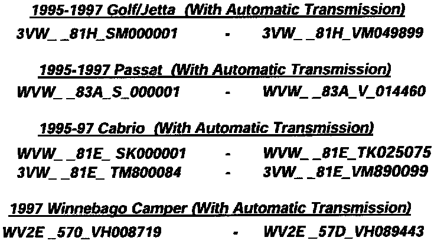
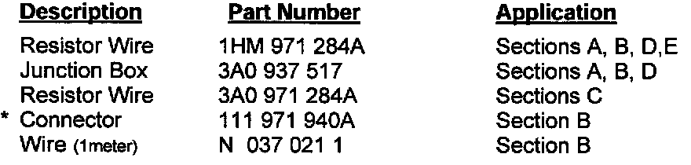

Campaign - Install Resistor Wire: Overview
NOTS
DATE
September 1997
Service Action Circular (Extension)
(Supersedes TS Circular Dated July 1997)
Subject:
1995-1997 Model Golf/Jetta, Passat, Cabrio and
1997 Model Winnebago Camper Vehicles
All With AG4 Automatic Transmission Install Resistor Wire
Dear Volkswagen Dealer:
This is to inform you of the extension of this service action campaign now involving 1995-1997 model Golf/Jetta, Passat and Cabrio and 1997 model Winnebago Camper vehicles, all with AG4 automatic transmission. The repair pertains to the installation of a resistor wire.
Problem Description
It is possible that due to intermittent insufficient voltage within the TCM, some automatic transmission vehicles could experience an irregular shift pattern.
Vehicle Identification Number Range
The vehicles affected are within the following vehicle identification number ranges:

Please note that the above VINs represent the lowest and highest serial numbers of affected vehicles. Use of the V-Crest campaign inquiry system will allow you to determine whether or not a particular vehicle, within the above VIN ranges, requires the corrective work.
Model Numbers
Important: Please Inform and/or Provide A Copy To All Personnel With Recall-Related Responsibilities!
Remedial Action
Install a resistor wire into affected automatic transmission vehicles according to the work procedure.
Owner Notification Mailing / Work Schedule
We will not mail notification letters to owners at this time. Therefore, we request that you perform this updating work on each affected vehicle in for maintenance or repair service work.
Also, please access your V-Crest system to verify the TS action code.
Parts Information
We will automatically ship to you an initial supply of the following required parts, according to your vehicle allocation:

Additional required parts must be ordered by you from your respective parts depot. Please refrain from over-ordering any of these parts; you may be required to return excess inventory.
* Connector is included as part of VAS 1978 Wiring Harness Repair Kit and therefore, will not be allocated.
Work Procedure
ENSURE THAT VEHICLE MODEL / MODEL YEAR CORRESPONDS WITH THE APPLICABLE WORK PROCEDURE
NOTE: In the following work procedures, the exact position of each junction box may be slightly different than what is shown in the illustrations because of vehicle content and assembly build variations.

Model/ Year
Replacement Time /
Reimbursement
To ensure proper payment, be sure to enter the reimbursement data for the appropriate model and only for VINs showing the TS code in the V-Crest system.


TS Data Entry Procedure
The system automatically enters the labor and part number(s) applicable to the above listed reimbursement codes.

For vehicles which, according to your information are unreachable, please enter into the system one of the codes indicated, as applicable:
Supplemental Accounting
If in a isolated instance, additional labor/part(s) replacement is required in one of the TS affected vehicles, please request reimbursement in accordance with the Campaign Information Circular dated January 1997, using the Supplemental Data Entry procedure: RC claim type with damage code TSAB.
Additional Campaigns
Some of the affected vehicles may also be involved in additional corrective actions. Please check your V-Crest system for the applicable codes so that any additional work can be completed simultaneously.
Dealer Obligation
Dealers are to service each vehicle subject to this service action regardless of mileage, age of vehicle, or selling dealer, from this time forward.
Service Help
if you have any questions regarding this action or any other service action, please contact me at (248) 340-4850 or
Gerald Lasky (248) 340-4734
John von Hollen (248) 340-4858
Sheila Gailliard (248) 340-4855
Dealer Personnel Information
PLEASE INFORM AND/OR PROVIDE A COPY OF THIS COMMUNICATION TO EVERY PERSON IN YOUR DEALERSHIP WHO HAS CAMPAIGN-RELATED RESPONSIBILITIES, INCLUDING ACCOUNTING PERSONNEL.
Thank you for your cooperation.